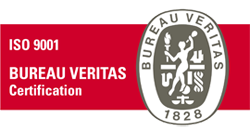

Teenused
Kliendid meist
Suuline tõlge
Oleme Scriba Tõlkebüroole usaldanud ühe oma olulisima ülesande – meie vahetu esindamine klientidele. Sellise koostöövormi kõige olulisemaks märksõnaks on usaldus, mis teatavasti kasvab ajas ja kogemustes. Lühikese aja, ent olulise kogemuse võrra rikkamana, teame omalt poolt väita, et ka Scriba meeskond teab hästi, mida tähendab tähtaeg, ladus koostöö ja oma erialale täielik pühendumine. Rõõm oli tõdeda, et nad hoolitsesid meie tellimuse eest nii, nagu see oleks ka nende jaoks eksistentsiaalne küsimus, mis oluliselt vähendab tellijapoolset muret kvaliteedikriteeriumite pärast.
Kristiina
Kirjalik tõlge
Kasutasime Scriba Tõlkebüroo teenuseid ventilaatorite ja teiste ventilatsiooniseadmete brošüüride tõlkimiseks soome keelde. Tõlked valmisid täpselt kokkulepitud ajaks. Tavaliselt on tehniliste tõlgete puhul vaja teha hiljem mitmeid parandusi, kuid Scriba tõlge oli teostatud väga professionaalselt ja täpseid tehnilisi termineid kasutades. Tõlketööle veel hiljem lisandunud fraasid said tõlgitud samal päeval. Hinnatase oli ka väga taskukohane. Seepärast kasutan Scriba teenuseid vajadusel ka edaspidi ja soovitan seda kindlasti ka kõikidele teistele.
Margus
Scriba OÜ
Tõlkebüroo Scriba asutati 2007. aasta novembris väikese büroona. Praeguseks oleme laiendanud oma tegevusvaldkondi ning pakume tõlkeid peamiselt Eestis ja Põhjamaades. 2009. aastal alustasime kvaliteedijuhtimise süsteemi juurutamist ning 2010. aastal saime esmakordselt ISO 9001-2008 sertifitseeringu. Meie edu alus on lojaalne, kokkuhoidev ja tõhus meeskond. Scriba kontor asub Tartu kesklinnas ajaloolises ja kaunis Veetornis. Sageli täidame klientide tõlkesoove ka Tallinnas.

Tegevusaastate jooksul oleme loonud koostöösuhted paljude edukate, usaldusväärsete ja kompetentsete tõlkijate ja tõlkidega, kes aitavad tagada stabiilset kvaliteeti. Kogenud toimetajad annavad tõlgetele aga viimase lihvi. Meie töökeelte ja koostööpartnerite valik laieneb pidevalt, mistõttu võite meie poole pöörduda ka eksootiliste või tavapäratute päringutega.